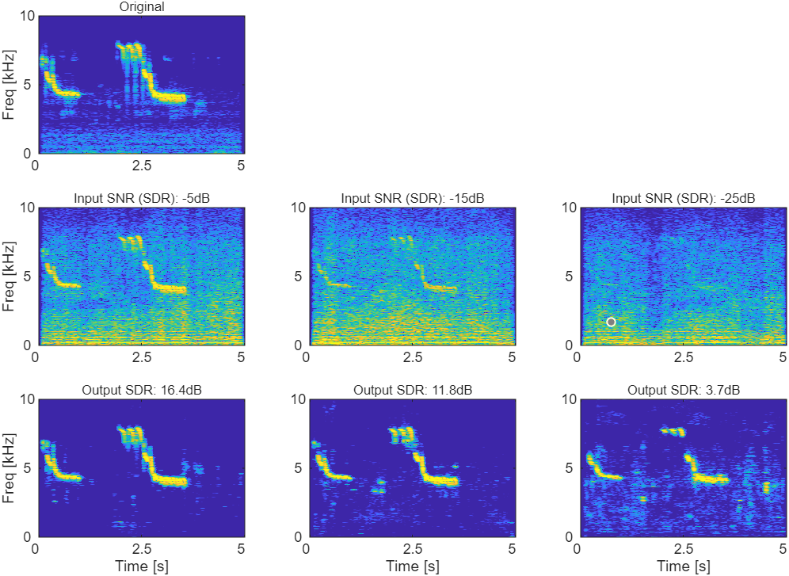
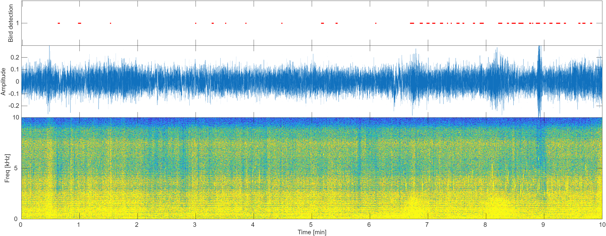
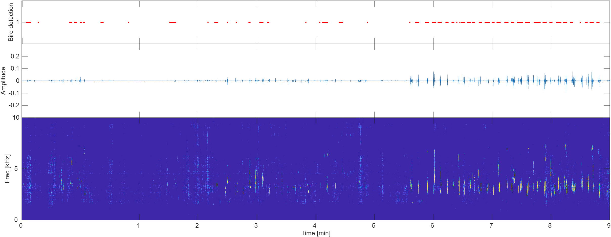
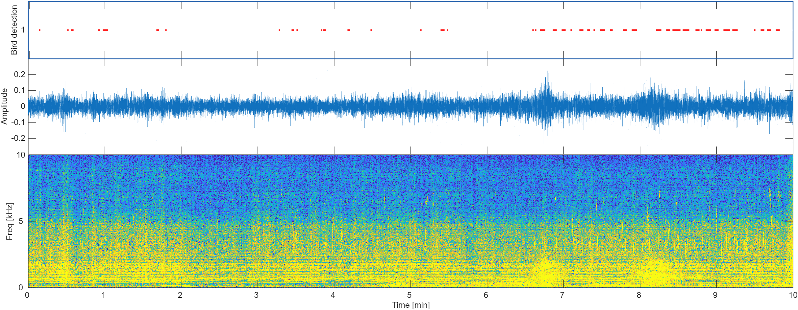
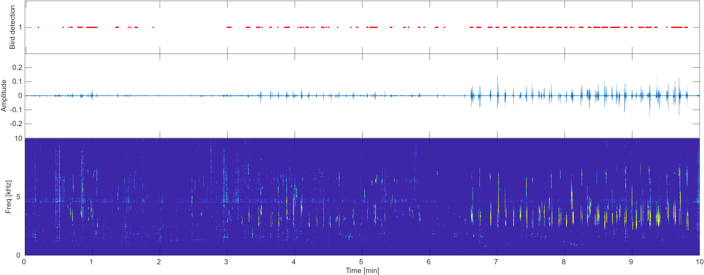

Demos
Simulated recording:
| Spectrogram examples illustrating how the General model restores bird calls masked by drone noise. From left to right: simulated mixtures at -5, -15, and -25 dB input SNR. From top to bottom: the original clean bird call (Eurasian Blue Tit), the noisy mixture, and the enhanced output. |
|  |
| Original | ||
| Input SNR (SDR): -5 dB | Input SNR (SDR): -15dB | Input SNR (SDR): -25dB |
| Output SDR: 16.4dB | Output SDR: 11.8dB | Output SDR: 3.7dB |
In-situ recording:
| Noisy input |
|  |
| Enhanced |
|  |
| Noisy input |
|  |
| Enhanced |
|  |